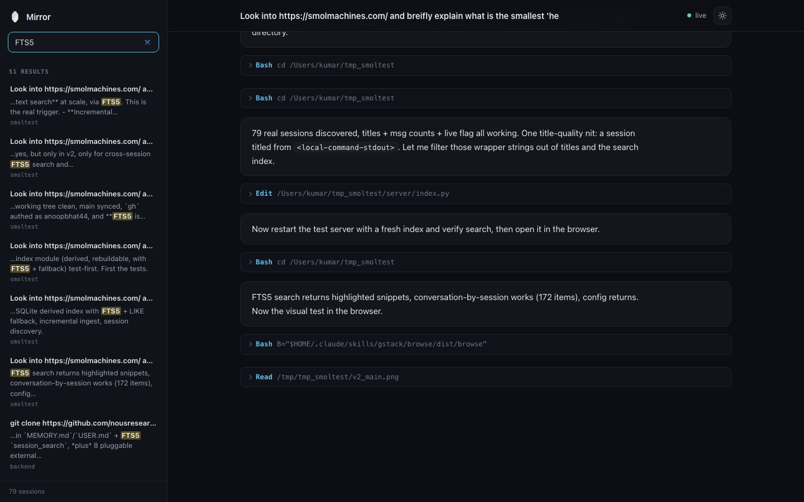
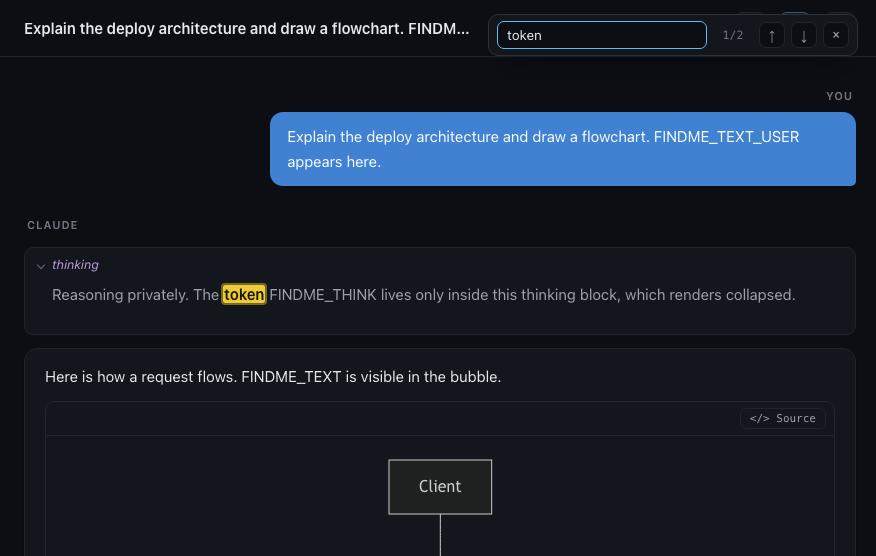

What it is
Your terminal sessions, as a readable workspace.
Claude Code runs in your terminal, where long conversations scroll away fast. Mirror is a plugin that mirrors those conversations into a browser tab: rendered markdown, syntax-highlighted code, collapsible tool calls, a list of all your sessions, and full-text search across them. It reads the transcript files Claude Code already writes, so it never calls a model and never costs a token.
New to Claude Code? It is Anthropic's coding agent that runs in your terminal. Install it first (it needs Node.js):
# install Claude Code, then sign in when it launches
npm install -g @anthropic-ai/claude-code
claude
Full instructions: docs.claude.com/en/docs/claude-code. Once claude works in your terminal, add Mirror below.
Install Mirror
Three steps to a live link.
-
Clone the plugin.
Put it anywhere on your machine.
git clone https://github.com/anoopbhat44/mirror.git -
Start Claude Code with the plugin loaded.
Point Claude Code at the folder you just cloned. Run this from any project you want to work in.
claude --plugin-dir /path/to/mirrorPrefer a permanent install? Add it through a local marketplace instead:
claude plugin marketplace add /path/to/mirror claude plugin install mirror
-
Open the link Mirror prints.
On startup you will see a line like this. Open it in your browser.
🪞 Mirror live view: http://localhost:7842
Requirements: Python 3.8+ (already on macOS and most Linux) and Claude Code. There is nothing to pip install or build. If you edit plugin files during development, run /reload-plugins inside Claude Code.
How to use it
Read, switch, search.
Watch the live session
The conversation you are in appears on the right and updates after every turn, keeping your scroll position. A green dot marks it live.
Switch between sessions
The left sidebar lists every Claude Code session, grouped by project and sorted by recency. Click any one to read it.
Search and find
Type in the search box to find any message across all your sessions. Press ⌘F / Ctrl‑F to find within the open session, reaching into collapsed thinking and tool calls. Click a result to jump to it.
Make it yours
From the top bar: toggle dark and light, turn diagrams on or off, hide thinking or tool calls, export a session to Markdown, and copy a Resume command (or hover any sidebar row). It remembers your choices. Run /mirror to reopen the link.
Try these
Get a feel for it in five minutes.
Give Claude one of these prompts and see exactly what Mirror renders. Use the arrows, the dots, or swipe to move through the examples.




And from the top bar: press ⌘F / Ctrl‑F to find within a session, Export it to Markdown, toggle Diagrams, hide thinking or tool calls from the filter menu, copy a Resume command (top bar for the open session, or hover any row in the sidebar), and run /mirror any time to reopen the link.
Features
What you get.
No API cost
Mirror never calls a model. It renders the transcript your session already writes, so it rides on the Claude subscription you have.
Localhost only
The server binds to 127.0.0.1. Your transcripts, with their secrets and file contents, never leave your machine.
Multi-session workspace
Every session in one place, grouped by project, with live indicators and message counts.
Search and in-page find
Fast full-text search across your whole history, powered by SQLite. Plus ⌘F / Ctrl‑F to find within a session, including text inside collapsed blocks.
Export and resume
Export any session to Markdown with one click. Copy a claude --resume command from the top bar or any sidebar row to pick a conversation back up.
Real rendering
Markdown, highlighted code, tables, and collapsible tool calls and thinking. Wide content uses the space.
Diagrams and images
Mermaid blocks render as diagrams, with a per-diagram source toggle. Pasted images and screenshot tool results show inline.
Built for long sessions
Runs of tool calls collapse into a group, code blocks get a copy button, and long output folds behind "Show more".
Zero dependencies
Pure Python standard library on the server. Nothing to install, nothing to build.
Options
Configure it (optional).
Mirror works with no config. To change defaults, create ~/.mirror/config.json:
{
"theme": "dark", // "dark" or "light"
"port": 7842, // preferred port (falls back if busy)
"auto_open": false // open the browser when the server starts
}
FAQ
Questions.
Does it cost anything or use my tokens?
No. Mirror reads the transcript files Claude Code writes to disk. It never makes a model call, so it adds nothing to your bill.
Is my data private?
Everything stays local. The server only listens on 127.0.0.1, so the page is reachable only from your own machine. Mirror does not upload anything.
Which operating systems work?
macOS and Linux. You need Python 3.8 or newer, which is already present on most systems.
Do I have to keep a terminal open?
Mirror starts a small background server automatically when Claude Code launches. Just open the printed link.
How do I stop it?
Run kill $(cat ~/.mirror/server.pid). It starts again next time you launch Claude Code.